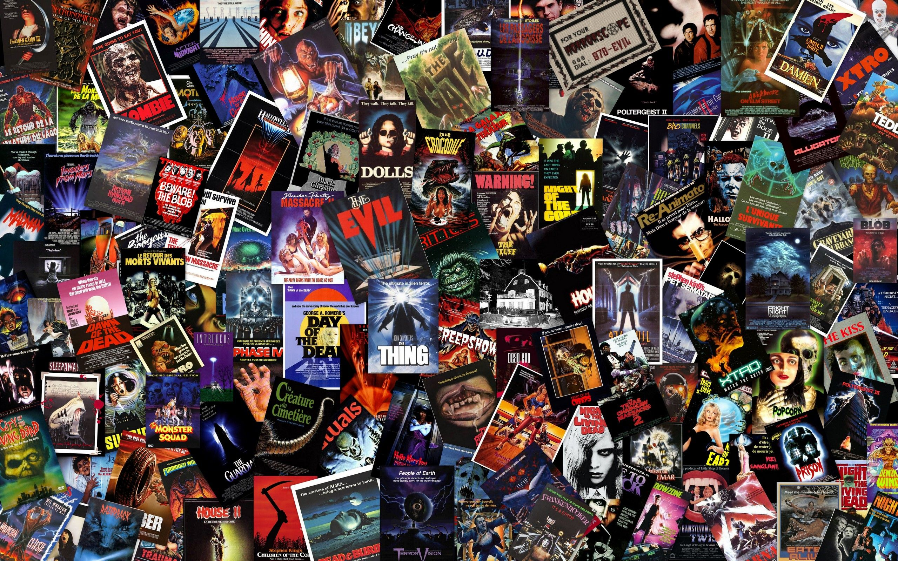
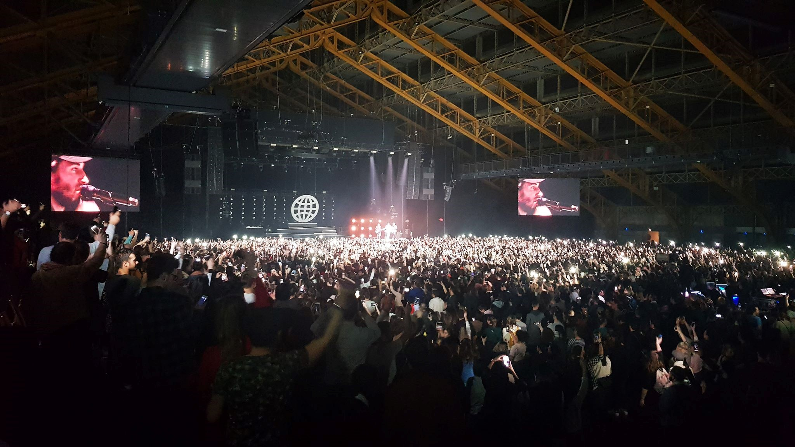

A través de Alfred Hitchcock, Stanley Kubrick, Danny Boyle, Ridley Scott, J.J Abrams, Steven Spielberg y
muchos otros, he construido mi cultura cinematográfica.
Las sesiones de cine en el instituto fueron verdaderos momentos de placer que me hicieron descubrir "La
ventana al patio" de Hitchcock o "Hugo Cabret" de Martin Scorsese y otras obras maestras del cine.
Fue en el instituto cuando le di un sentido más íntimo al cine. Al incorporarme a la opción
"cine-audiovisual" pude aprender cómo los directores ponen en escena una historia y hacen vivir al público
una experiencia real. Pude descubrir a Agnès Varda y Jacques Demy a través de películas como "Les glaneurs
et la glaneuse" y "Jacquot de Nantes".

Musica
La música forma parte de mi vida, la escucho todos los días, para descansar, para trabajar, para entrenar.
En 2018 fue el concierto de Imagine Dragons el que me emocionó.
Uno de mis géneros favoritos es el rap. Si se busca bien, se pueden encontrar verdaderas joyas en cuanto a
artistas que combinan la poesía y el rap para escribir canciones sobre la vida cotidiana, los momentos
importantes y humillantes. Algunos de ellos se desnudan y exponen su sensibilidad de una manera tan
hermosa
que me llega al corazón. Puedes encontrar este tipo de texto: A pesar del espíritu, estamos atrapados
en los
gritos / Solo frente a mi reflejo: sin simetría - Nekfeu, Humanoid .

Piano
Siempre me han emocionado las piezas de piano, ya sea en películas como "Let's Run Away Together" de
Johannes Bornlöf o las composiciones de Ludovico Einaudi para Intouchables. Por eso, sin tomar clases,
decidí probar el piano hace 4 años.
Empecé aprendiendo piezas básicas o versiones fáciles de piezas
complicadas. Y me encantó. Así que empecé a tocar más y más hasta mi último año de instituto, porque cuando
empecé la universidad tuve que dejar de lado el piano. Pero echaba mucho de menos el piano, así que decidí,
con la ayuda de mi beca de bachillerato, comprar un piano para mi habitación del internado.
Esto me permitía
estar libre durante la semana. Cuando el estrés era demasiado grande, jugaba. Y cuando quería divertirme un
poco más, improvisaba. Las dos piezas que más me han costado aprender y de las que estoy más orgulloso son
Where is my mind, de los Pixies, compuesta para piano por Maxence Cyrin, y Mariage d'amour, de Paul de
Senneville.